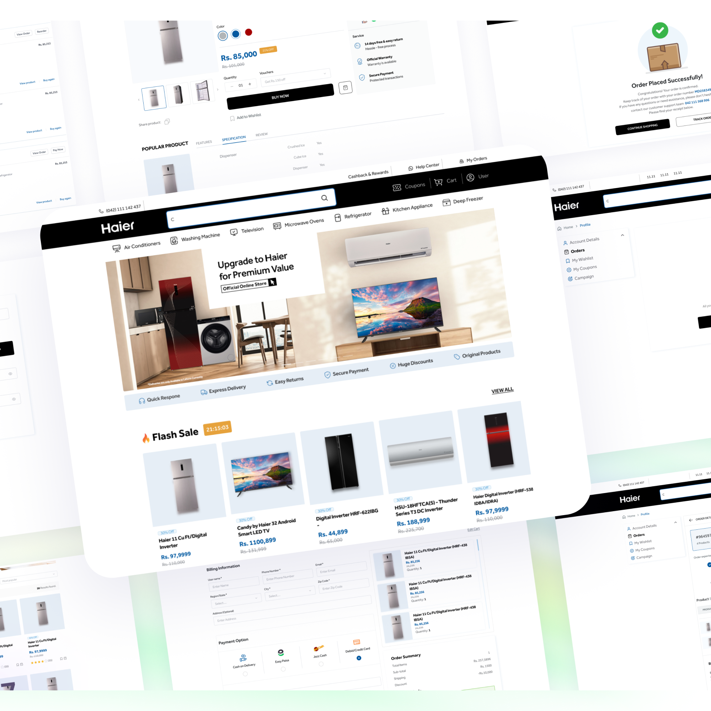
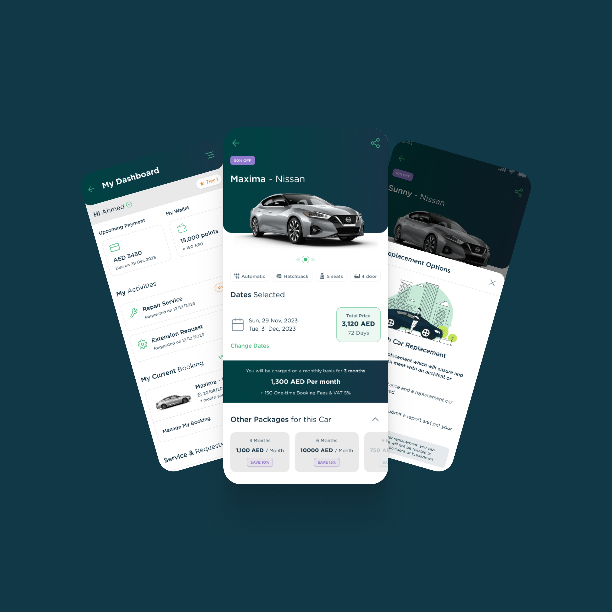
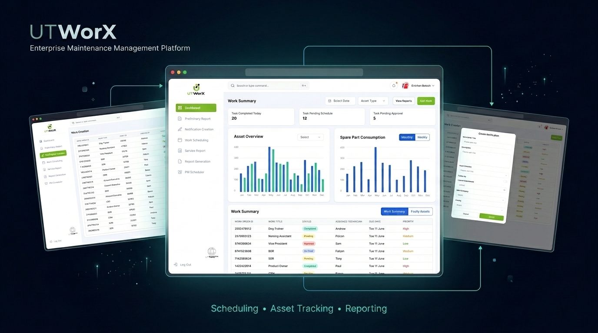
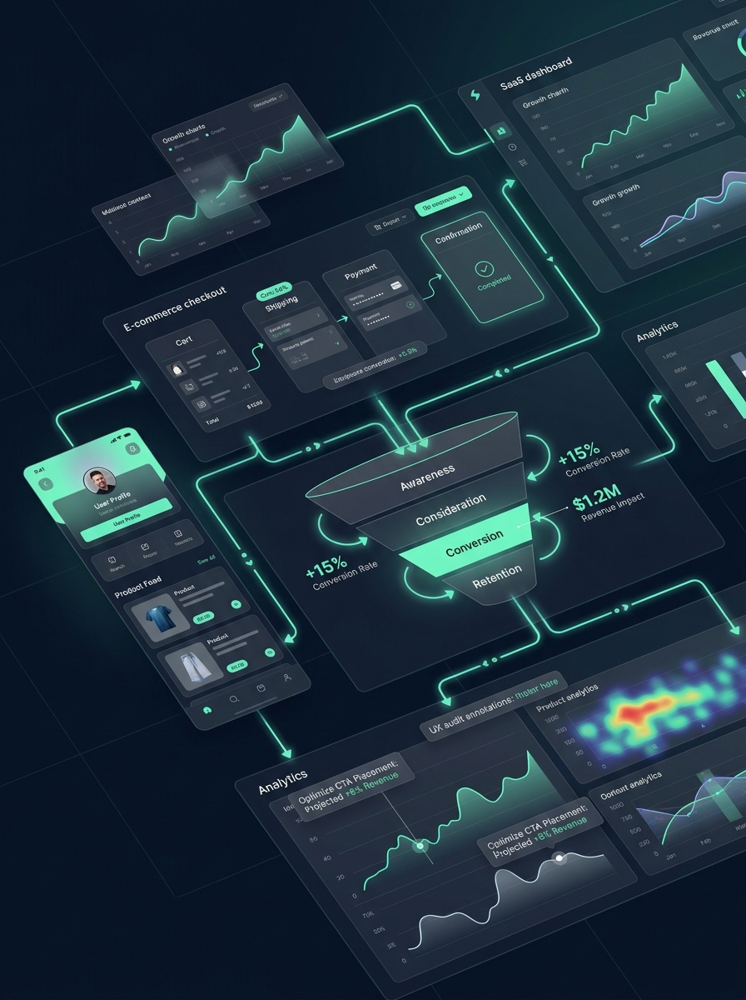

Partnering with founders and growing teams to transform complex products into intuitive experiences that drive measurable business growth.
Every project begins with understanding the business problem—not just improving the interface. These case studies show how UX strategy, product design, and conversion thinking translated into measurable outcomes for SaaS products and ecommerce brands.
View more case studies



From UX strategy and product design to conversion optimization and trusted implementation, every engagement is focused on solving business problems and delivering measurable outcomes.
Identify the usability issues, conversion blockers, and friction points limiting your product's performance. Every audit delivers prioritized recommendations focused on business impact not just design feedback.
Conversion-focused websites and landing pages designed to communicate value clearly, build trust, and guide visitors toward meaningful actions.
Designing intuitive product experiences from onboarding and core workflows to complex dashboards—that improve usability, feature adoption, and long-term scalability.
End-to-end mobile product design, from user flows and wireframes to developer-ready interfaces, creating experiences that are intuitive, scalable, and built for real users.
Understand the business, product, users, and project goals. We define success before any design work begins.
Combine user insights, analytics, competitive analysis, and UX research to identify opportunities and establish a clear product direction.
Prototype, usability testing, stakeholder feedback, and iterative improvements to validate key decisions before development.
Collaborate closely with developers, provide detailed design specifications, review implementation, and ensure the final product reflects the intended experience.
Review performance after launch, identify improvement opportunities, and continue optimizing the product based on user behavior and business goals.

I help SaaS products and ecommerce brands solve product challenges through UX strategy, product design, and conversion-focused thinking. Every project starts by understanding the business problem before designing the solution.
With 5+ years of experience, I've partnered with startups, growing businesses, and enterprise teams across SaaS, ecommerce, mobile, and complex digital products. My work focuses on creating experiences that reduce friction, improve usability, and deliver measurable business outcomes.
Whether improving a checkout experience, simplifying enterprise workflows, or uncovering conversion blockers through a UX audit, the goal remains the same: create intuitive experiences that help users succeed and businesses grow.
Based in Pakistan. Working remotely with clients across the UAE, UK, US, and beyond.
Whether you're launching a new product, improving an existing experience, or trying to increase conversions, every engagement starts with understanding your goals. Book a free 30-minute discovery call, and let's explore how strategic design can help move your product forward.
No sales pitch. No obligation. Just a focused conversation about your product and its goals.